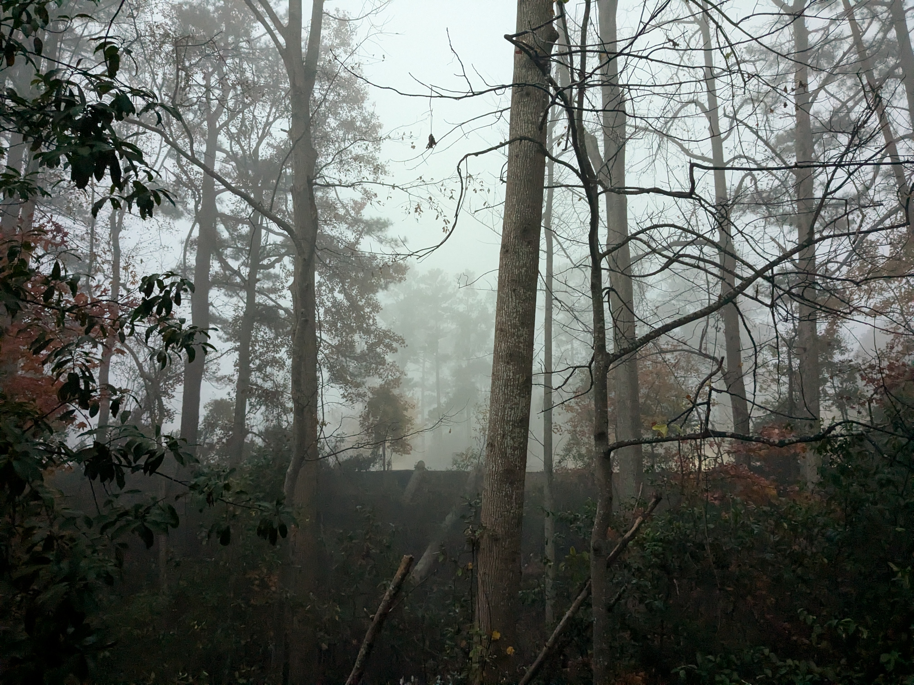
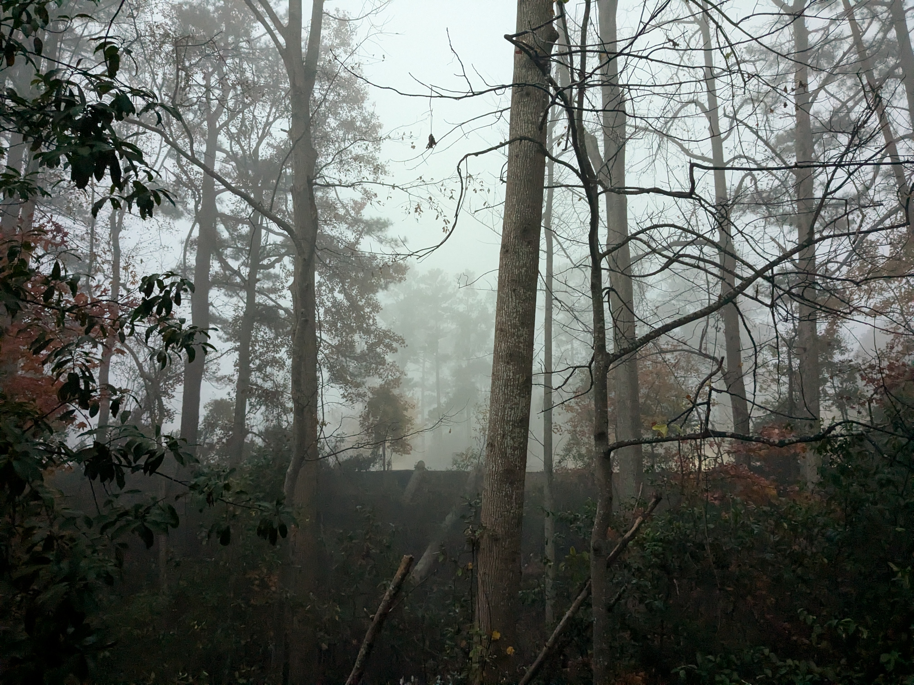

This is a compalation of images I have taken that I am rather proud of. This is unfortunately nearly all pictures of the outside and other locations. I wish I had headshots or gatherings that I've photographed, but until I go to an event and get photos I will be without them. All Rights Reserved


 
